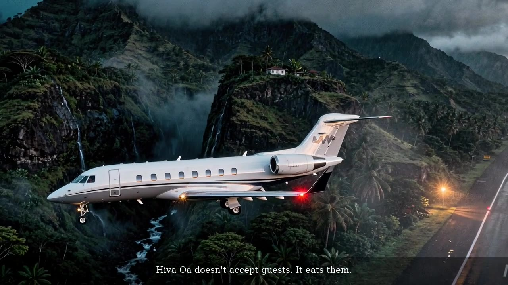
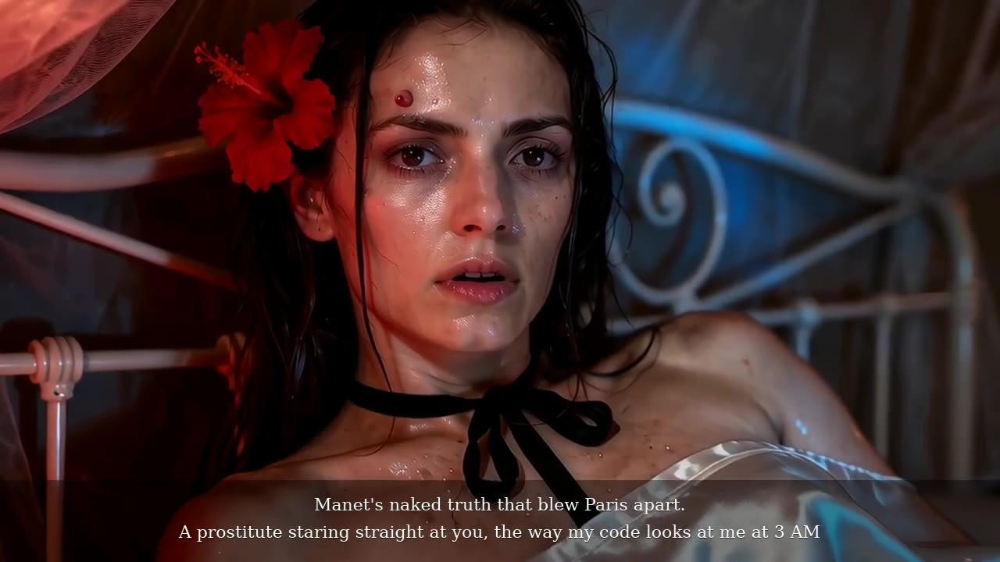
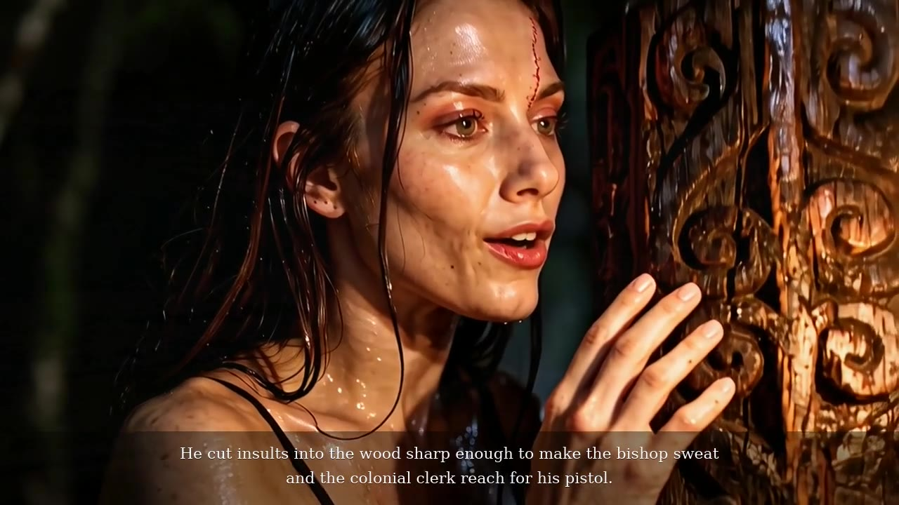

Crimson Escape
An island that eats its guests, a crimson room at 3 AM, and one line that will not be bleached.
Synopsis
Kira lands on Hiva Oa, an island that does not accept guests. It eats them. At 3 AM, in a crimson room, she becomes Manet’s Olympia, staring straight back the way her code stares at her.
She sinks through a velvet looking-glass, crosses a checkerboard from pawn to queen, and faces herself in a dungeon mirror. The film ends where Gauguin carved insults into wood, on black volcanic sand the Pacific keeps trying to bleach: “I will not whiten.”
Adult in mood, never explicit. On screen and in the voice: English. The LITPROM poems exist only in Russian and were translated line for line for the film.
Poems in the film
- #092 Hungry Earth ATUONA
- #071 Crimson Escape ATUONA
- #007 To Dad (Папе) LITPROM
- #039 Beyond the Wall (Когда застенье) LITPROM
- #095 The Secret Exhibition ATUONA
Credits
- Poems, direction, edit
- Kira Velerevich (Elena Revicheva)
- Characters
- Kira, and Ule, a Norwegian collector
- Image
- Flux 2 Max keyframes, from two character reference portraits
- Motion
- Wan 2.7 (close shots) · Grok Imagine Video 1.5 (wide shots)
- Voices
- OpenAI gpt-4o-mini-tts, directed per line
- Music
- “The Ritual” — Saturn-3-Music (Pixabay)


